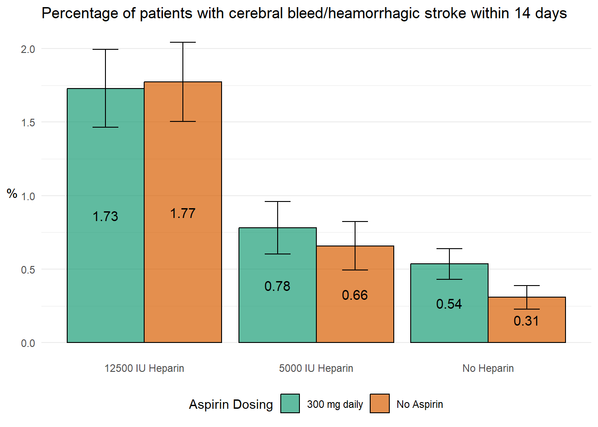
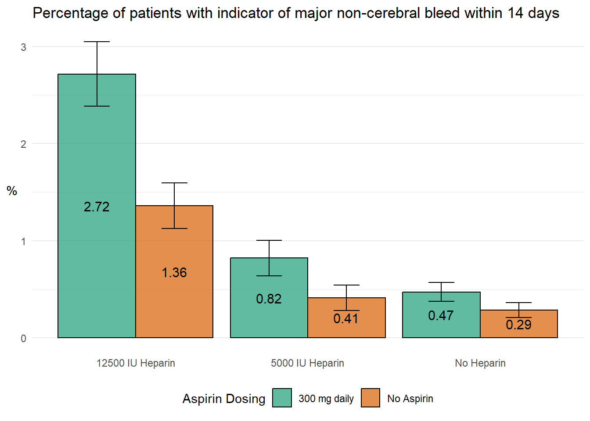

Warning: package 'here' was built under R version 4.2.3
here() starts at C:/Users/frede/OneDrive/Dokumenter/2 DTU master/1 Semester/22160 R for Bio Data Science/group_29_project
Creating Function
box_func <-function(group_title,data,colvar){#Select only the data of the effect we are investigating relevant_data <- data |>select(RXHEP, RXASP, {{colvar}})#Removes all patients which does not fulfill the requirement we want to investigate percentage_data <- relevant_data |>#Counts the patients in each groupgroup_by_all() |>count() |>#Creates the six groups examinedgroup_by(RXHEP, RXASP) |>#Creates a row with percentages for use in plotmutate(total_in_group =sum(n),percentage = n / total_in_group *100,#Calculating standard deviationsp = n / total_in_group,se =sqrt(p * (1- p) / total_in_group) *100) |>filter({{colvar}} !="N")#Create the order of doses of medicine, so they have the correct order in the plot sorted_data <- percentage_data |>mutate(RXHEP =factor(RXHEP, levels =c("M", "L", "N")),RXASP =factor(RXASP, levels =c("Y", "N"))) plot_box <- sorted_data |>ggplot(mapping =aes(x = RXHEP, #Stratisfy on dose of hepariny = percentage, #Expresses the chance of the event happening fill = RXASP, #Color by the dose of aspirinymin = percentage - se, #Defines minimum for error barsymax = percentage + se)) +#Defines maximum for error bars#Creates the columns - position_dodge-argument makes one column for each groupgeom_col(position =position_dodge(preserve ="single"), alpha =0.7,color ="black") +#Creates text for data geom_text(aes(label =round(percentage, 2),y = percentage /2),#Makes text centered in boxes and correct sizesposition =position_dodge(width =0.9),vjust =0.5,size =4) +#Adds errorbarsgeom_errorbar(position =position_dodge(width =0.9),width =0.3) +#Create labels for each patientlabs(title =str_c("Percentage of patients with ", group_title),x =NULL,y ="%",fill ="Aspirin Dosing") +scale_fill_brewer(palette ="Dark2",labels =c("Y"="300 mg daily","N"="No Aspirin")) +theme_minimal() +#Chooses a design (remove grey background)theme(legend.position ="bottom",axis.title.y =element_text(angle =0, vjust =0.5), #Adjust y-axis tetpanel.grid.major.x =element_blank()) +#Adjusting horizontal lines#Edits labels for the X-axisscale_x_discrete(labels =c("M"="12500 IU Heparin","L"="5000 IU Heparin","N"="No Heparin"))#Defines final output of function to be the plotreturn(plot_box)}
Loading Data
data <-read_tsv(here("data/03_dat_aug.tsv"))
Rows: 19435 Columns: 98
── Column specification ────────────────────────────────────────────────────────
Delimiter: "\t"
chr (69): RCONSC, SEX, RSLEEP, RATRIAL, RCT, RVISINF, RHEP24, RASP3, RDEF1, ...
dbl (28): USUBJID, RDELAY, AGE, RSBP, RYEAR, HOURLOCAL, MINLOCAL, DAYLOCAL, ...
lgl (1): DDEAD
ℹ Use `spec()` to retrieve the full column specification for this data.
ℹ Specify the column types or set `show_col_types = FALSE` to quiet this message.
Creating bar plots
box_func("cerebral bleed/heamorrhagic stroke within 14 days",data,H14)

box_func("indicator of major non-cerebral bleed within 14 days",data,TRAN14)

box_func("indicator of pulmonary embolism within 14 days",data,PE14)